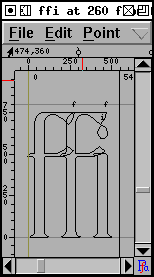
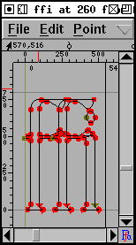
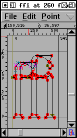
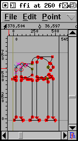

Tutorial #4
- Kreieren eines neuen Schriftsatzes
- Erzeugung eines Bildzeichens (Umrissverfolgung)
- Navigation zu weiteren Bildzeichen
- Auf zum nächsten Bildzeichen (konsistente Richtungen)
- Konsistente Serifen und Stammbreiten
- Erzeugung akzentuierter Bildzeichen
- Erzeugung einer Ligatur
- Untersuchung von Metriken
- Unterschneidung
- Bildzeichenvarianten
- Ankermarkierungen
- Bedingte Eigenschaften
- Überprüfen des Schriftsatzes
- Bitmaps
- Erzeugung
- Schriftsatzfamilien
- Fazit
- Bemerkungen zu verschiedenen Skripten
Building accented glyphs
In lateinischen, griechischen und kyrillischen Zeichensätzen existieren jeweils eine Anzahl akzentuierter Zeichen. FontForge bietet eine Reihe von Möglichkeiten, akzentuierte Varianten aus deren Grundformen zu erstellen.
Die offensichtlichste Methode ist über einfaches Kopieren und Einfügen: Kopieren des Buchstabens "A" und Einfügen in "Ã" und Kopieren des Tilde-Zeichens und Einfügen in nach "Ã" (das Verhalten von "Einfügen" und "Einfügen in" untescheidet sich geringfügig voneinander. Während "Einfügen" den Zeicheninhalt vor dem Einfügen löscht, fügt "Einfügen in" den Inhalt der Zwischenablage an den Inhalt des Zeichens an). Danach wird das Bearbeitungsfenster für "Ã" geöffnet und die Position des Akzents angepasst, so daß er an der richtigen Stelle über dem A steht.
Diese Methode ist nicht besonders effizient: wenn die Form des Buchstabens "A" geändert wird, müssen auch alle akzentuierten Formen von "A" angepasst werden. Daher bietet FontForge die Möglichkeit, eine Referenz zu einem Zeichen zu erstellen. So kann in diesem Beispiel eine Referenz zu "A" kopiert und eingefügt werden und dann eine Referenz des Tildezeichens kopiert und mit "Einfügen in" eingefügt werden, welches hinterher über der Referenz zu A positioniert wird.
Wenn danach die Form des Originals von "A" verändert wird, ändert sich automatisch auch dessen Form in "Ã", und ggf. auch dessen Breite.
FontForge "weiß", daß "Ã" aus "A" und dem Tildezeichen zusammengesetzt wurde und kann akzentuierte Zeichen automatisch selbst erstellen, indem die Referenzen in "Ã" gesetzt werden und der Akzent über dem A positioniert wird. (Für Unicode steht eine Datenbank zu Verfügung, in der die einzelnen Komponenten jedes akzentuierten Zeichens als Unicodes aufgelistet sind).
Als Beispiel wird die Datei tutorial/Ambrosia.sfd
geöffnet und alle Zeichen im Codebereich 0xc0-0xff selektiert.
Nach Auswahl des Befehls
Element->Erzeugen->Akzentuiert erzeugen
erscheinen alle akzentuierten Zeichen auf magische Weise
(einige Zeichen in diesem Bereich sind nicht akzentuiert und
bleiben daher leer).
FontForge enthält eine Heuristik für die Positionierung von Akzenten (die meisten Akzente liegen zentriert über dem höchsten Punkt des Zeichens), welche gelegentlich schlechte Ergebnisse produziert (wenn z.B. einer der beiden Stämme des "u" ein wenig höher ist als der andere, wird der Akzent über diesem positioniert anstatt über dem gesamten Zeichen). Aus diesem Grunde sollte nach der Erzeugung der akzentuierten Zeichen immer nachkontrolliert werden, ggf. müssen ein oder zwei davon korrigiert werden (evtl. sollte sogar das Ausgangszeichen leicht verändert werden).
Erzeugung einer Ligatur
Unicode enthält eine Reihe von Ligaturzeichen (im Lateinischen sind dies: Æ, OE, fi, etc. während es in arabische Zeichensätzen hunderte sind). Auch hier gibt es für Unicode eine Datenbank für die einzelnen Komponenten jeder Standardligatur.
FontForge kann leider Ligaturen nicht automatisch erzeugen,
stattdessen können die Komponenten der Ligatur mit
Element->Erzeugen->Zusammengesetzt erzeugen.
in das Zeichen kopiert werden. Dies macht es ein wenig einfacher
(zumindest für lateinische Schriftsätze), Ligaturen zu gestalten.
 |
 |
 |
 |
|
| Über den Dialog des Befehls Element ->Zeicheninformation wird das Zeichen benannt und als Ligatur gekennzeichnet. Mit Element -> Erzeugen -> Zusammengesetzt erzeugen werden die Referenzen zu den Ligaturkomponenten eingefügt. | Mit Hilfe des Befehls Bearbeiten-> Referenzen trennen werden die Referenzen in Konturen umgewandelt. | Die Komponenten werden so angepasst, daß ihr gemeinsames Erscheinungsbild besser aussieht. In diesem Fall wurde der Stamm des ersten "f" ein wenig verkürzt. | Mit Element -> Überlappungen entfernen wird das Zeichen bereinigt. | Zum Schluss werden die Ligatur-Textmarkierungs-Linien vom Ursprung zu den entsprechenden Stellen zwischen den einzelnen Komponenten gezogen. |
Einige Textverabeitungsprogramme erlauben es, die Textmarkierung innerhalb einer Ligatur zu positionieren (mit einer Position zwischen jeder Komponente der Ligatur). Das hat den Vorteil, daß der Benutzer einer Textverarbeitung nicht zu wissen braucht, daß er/sie es mit einer Ligatur zu tun hat und sondern stattdessen so gearbeitet werden kann, als wenn die Komponenten einzeln vorliegen. Wenn die Textverarbeitung damit umgehen soll, muss der Schriftgestalter Zusatzinformation bereitstellen, um die Textmarkierung an die richtigen Stellen zu setzen. Wenn FontForge weiß, daß es sich bei dem Zeichen um eine Ligatur handelt, werden genügend Textmarkierungslinien erzeugt, um diese zwischen die Einzelkomponenten setzen zu können. Diese werden in den Ursprung gesetzt, und wenn sie dort gelassen werden, ignoriert FontForge diese. Im Normalfall ist es allerdings empfehlenswert, mit Hilfe des Selektionswerkzeugs die Textmarkierungslinien vom Ursprung zu den jeweiligen Positionen zu verschieben (wird lediglich von TrueType und OpenType unterstützt).
Warnung: OpenType-Engines verwenden nur solche Features, von denen sie glauben, daß sie für die aktuelle Schrift relevant sind (für lateinischen Schriften verwendet Uniscribe 'liga'). Schlimmer noch, einige Anwendungen unterstützen u.U. diese Funktionen überhaupt nicht (Word unterstützt keine Ligaturen für Latein). Microsoft versucht zu dokumentieren welche Eigenschaften für welche Schriften in Uniscribe zur Anwendung kommen, allerdings ist dies wenig hilfreich, da sich Word und Office nicht standardkonform verhalten.
Für indische Schriften werden viele Ligaturen benötigt, allerdings stellt Unicode für diese keine Kodierung zur Verfügung. Wenn eine Ligatur erstellt werden soll, die nicht Bestandteil von Unicode ist, ist dies trotzdem möglich. Dafür muß zunächst ein unkodiertes Zeichen erstellt (oder wenn der Schriftsatz ein Unicode-Font ist, kann ein Codepunkt in dem Codebereich für die private Nutzung gewählt werden) und das Zeichen benannt werden. Der Name ist wichtig, da FontForge bei korrekter Bennenung erkennen kann, daß es sich um eine Ligatur handelt und aus welchen Komponenten sie zusammengesetzt ist. Wenn beispielsweise eine Ligatur aus den Zeichen "longs", "longs" und "l" erstellt werden soll, sollte der Name "longs_longs_l" sein, wenn die Ligatur aus den Unicode-Zeichen 0D15, 0D4D und 0D15 bestehen soll, dann sollte das Zeichen "uni0D15_uni0D4D_uni0D15" genannt werden.
Nach der Benennung der Ligatur und dem Einfügen der Komponenten (mit "Zusammengesetzt erzeugen"), kann das Zeichen zur Bearbeitung geöffnet werden, die Referenzen getrennt und dann wie im obigen Beispiel gezeigt in die gewünschte Form gebracht werden.
 Abschliessend sollte überprüft werden, ob das Zeichen als Ligatur
markiert wurde (und die richtige Art von Ligatur).
Mit Element->Zeicheninformation->Ligatur
wird der Ligaturdialog geöffnet. Zu sehen sein sollte etwas wie:
Abschliessend sollte überprüft werden, ob das Zeichen als Ligatur
markiert wurde (und die richtige Art von Ligatur).
Mit Element->Zeicheninformation->Ligatur
wird der Ligaturdialog geöffnet. Zu sehen sein sollte etwas wie:
liga m longs longs l
oder
liga m uni0D15 uni0D4D uni0D15
Im ersten Fall kann eine zusätzliche Zeile durch Klicken des
"Neu..."-Knopfes erzeugt werden:
liga m longs_longs l
(unter der Annahme, daß bereits eine longs_longs ligatur existiert).
Im zweiten Fall könnte die Zeile ausgewählt werden, und nach
Klick auf den "Bearbeiten..."-Knopf der Ligaturtyp von
"liga" zu "akhn" geädert werden (ich weiss selbst nicht genug über
indische Schriften, um diese Unterscheidung zu verstehen), so
daß hinterher folgende Zeile angezeigt wird:
akhn m uni0D15 uni0D4D uni0D15
-- Vorherige Seite -- Inhalt -- Nächste Seite --